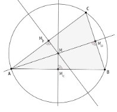
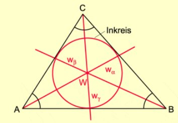
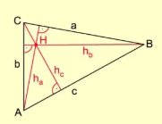
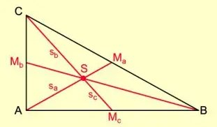
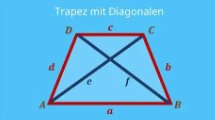

Dreieck & Trapez
Mittelsenkrechte & Umkreis
Die Mittelsenkrechte geht durch den Mittelpunkt einer Seite und steht senkrecht darauf.
Alle drei schneiden sich im Umkreismittelpunkt (U).

Winkelhalbierende & Inkreis
Die Winkelhalbierende teilt einen Winkel in zwei gleich grosse Teile.
Alle drei schneiden sich im Inkreismittelpunkt (I).

Höhen im Dreieck
Eine Höhe ist eine Senkrechte von einem Eckpunkt auf die gegenüberliegende Seite.
Schnittpunkt ist der Höhenschnittpunkt (H).
- Spitzes Dreieck → H liegt innen
- Rechtes Dreieck → H liegt beim rechten Winkel
- Stumpfes Dreieck → H liegt ausserhalb

Seitenhalbierende & Schwerpunkt
Eine Seitenhalbierende verbindet einen Eckpunkt mit der Mitte der Gegenseite.
Schnittpunkt ist der Schwerpunkt (S).

Verhältnis: $2:1$
Zusammenfassung
- Mittelsenkrechte → U → Umkreis
- Winkelhalbierende → I → Inkreis
- Höhe → H → abhängig vom Dreieck
- Seitenhalbierende → S → Schwerpunkt
Trapez
Ein Trapez ist ein Viereck mit mindestens einem Paar paralleler Seiten.
Bezeichnungen:
- $a, c$ → parallele Seiten
- $h$ → Höhe
Flächenformel:
$A = \frac{a + c}{2} \cdot h$

Beispiel
Gegeben: $a = 8$ cm, $c = 14$ cm, $h = 6$ cm
Rechnung: $A = \frac{8 + 14}{2} \cdot 6 = 66 \text{ cm}^2$
Antwort: Die Fläche beträgt 66 cm².
Tipps
- Immer Skizze machen
- Höhe steht immer senkrecht
- Bei Flächen → immer cm²
- Formel richtig einsetzen